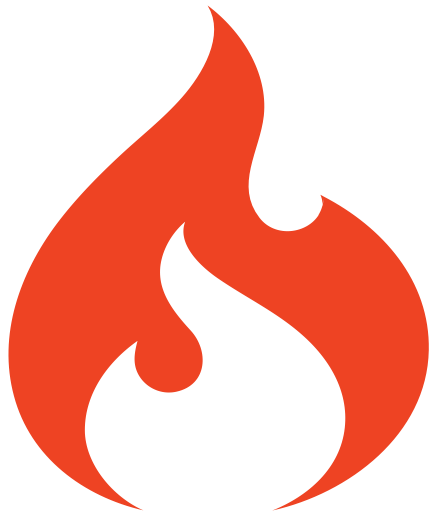
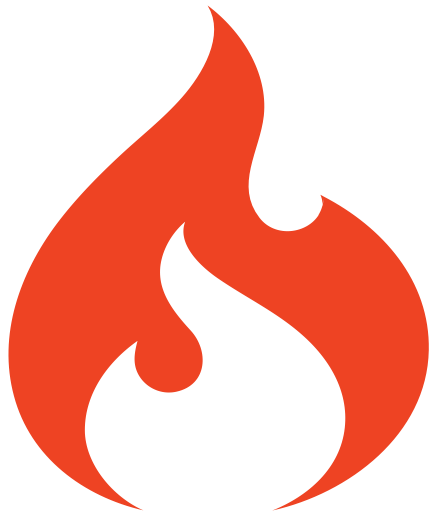

I'm HANIFAH
a Front-End Web Developer
About Her
Born in January 1997, she lives and spend her childhood in Klaten. She start her boarding school in high school, then continued studying at UGM. She has 3 siblings and is a cat lover.
Live and Work in Yogyakarta
Loving Musics and Arts
Love to Watch Sherlock Holmes
Education
She take 4 years of study in Information Technology field. She take the undergraduate studies at UGM and graduated as bachelor of engineering with GPA of 3.38 in November 2019 During her studies, she takes part in several startup activities organized by UGM as a frontend developer. In her thesis project, she spesializes in software engineering and developed a web-based sentiment analysis system with business intelligence as a data processing tool.

"Sentiment Analysis and Business Intelligence towards UGM Brand through UGM Students Blogs" in October 2019.
| Undergraduate Program | S1 Teknologi Informasi UGM, Yogyakarta | 2015 - 2019 |
| Senior High School | Boarding School MAN 1 Surakarta, Surakarta | 2012 - 2015 |
| Junior High School | SMPIT Ibnu Abbas Klaten, Klaten | 2009 - 2012 |


 
